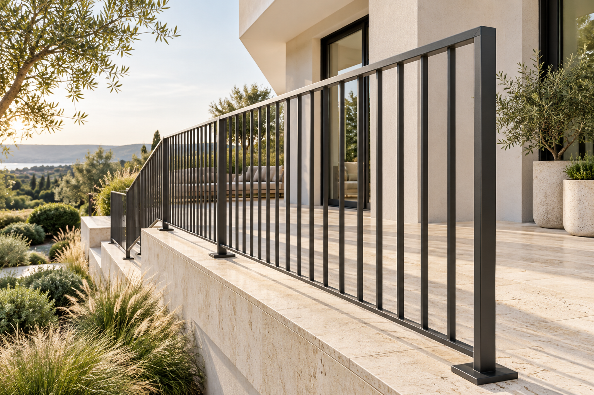
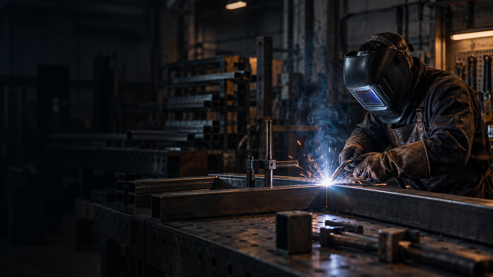

Opowiedz o pomyśle
Zdjęcie miejsca, prosty szkic i wymiary wystarczą na początek.
MACIEJ KOWALCZYK · NIEDŹWIEDŹ
Proste linie. Przemyślane detale. Konstrukcje, które dopełniają przestrzeń — od balustrady po Twój własny projekt.
Masz pomysł? Wystarczy szkic i kilka wymiarów.

CO MOŻEMY STWORZYĆ
Każda przestrzeń ma swój wymiar. Wybierz temat projektu i opowiedz, czego potrzebujesz. Zakres wykonania ustalimy indywidualnie.
Lekka forma dla schodów, balkonów i tarasów.
01 / PRZESTRZEŃ I BEZPIECZEŃSTWOWyrazista linia i spójny charakter posesji.
02 / GRANICE W DOBRYM STYLUStelaże, ramy i elementy dopasowane do pomysłu.
03 / TWOJA WIZJA, KONKRETNA FORMAPotrzebujesz naprawy? Pokaż element i opisz, co trzeba zrobić.
Zapytaj o możliwość naprawy ↗
OD SZKICU DO SZCZEGÓŁU
Zdjęcie miejsca, prosty szkic i wymiary wystarczą na początek.
Materiał, wykończenie, montaż i termin tworzą zakres oferty.
Prace zaczynają się po uzgodnieniu zakresu, ceny i warunków.
TWÓJ PROJEKT / PIERWSZY KROK
Wybierz parametry i zobacz przykładowy koszt. Nie znasz materiału? Zostaw dobór do rozmowy.
Wczytaj gotowy przykład lub uzupełnij parametry. Ceny są demonstracyjne.
Materiał, przekroje, detale, wykończenie, transport i warunki montażu. Naprawy oraz nietypowe konstrukcje wymagają indywidualnej oceny.
Podgląd lokalny: zapytania zapisują się tylko na tym komputerze. Nie są wysyłane do Macieja.
WARTO WIEDZIEĆ
Tak. Przygotuj zdjęcie miejsca, orientacyjne wymiary i krótki opis. Potrzebę pomiaru i dokumentacji ustala się przed wykonaniem.
W podglądzie używamy fikcyjnych cen demonstracyjnych. Rzeczywista oferta wymaga stawek wykonawcy i potwierdzenia szczegółów projektu.
Zdjęcie całego elementu, zbliżenie uszkodzenia i opis zastosowania. Jeśli znasz materiał i grubość, dopisz je w formularzu.
MASZ COŚ NA MYŚLI?
Maciej Kowalczyk
Niedźwiedź, Małopolska
000 000 000
mspaw@example.com
Numer i e-mail są fikcyjne. Do kontaktu z firmą użyj podanych profili.